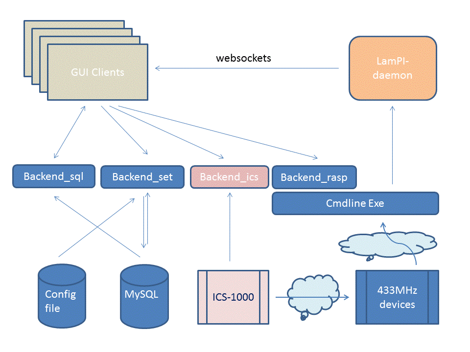

This chapter describes some design and architecture considerations for LamPI. It is meant to provide background information on why the components and their setup are chosen the way they are, and at the same time will allow you to judge if you can live with that setup or whether you are convinced that you can do better yourself.
Please tell me if you consider certain aspects a major flaw, and I might re-design those parts. Also, if you like to partitipate in the project and rewrite some new parts of the code, please tell me. This chapter contains the following subjects (for easy navigation):
LamPI started as an alternative controller to the ICS-1000 controller of klikaanklikuit.nl (150 EURO), but today it offers support for other brands as well as well support for sensors and even 868MHz Z-Wave devices.
LamPI consists of a few major components as outlined in the pisture below (picture needs some updating). Starting with release 1.7 all communication between the front-end and the controlling daemon takes place over websockets. Of course, when you work with the ICS-1000 this will be an exception.

Let's explain a little bit more about the architecture. There are a few main components to be recognized that are further described in this document. These components or modules are the following:
When you have a lot of devices, or sensors around the house you might duplicate functions for more reach, or duplicate to spread the load on the system more evenly. In this case the described modules can be put on separate systems. These do not have to be Raspberry systems per-se but can also be your fileserver or NAS or your router.
You have to keep in mind though that these systems have dependensies and need other packages to be available in order to work. For example the LamPI-gui needs apache and webserver availability including websocket support, the database function needs MySQL support and the LamPI-daemon needs a php system in place. Communication between modules takes place with regular sockets or websockets (with exception of the database where we use the mysql function). There are advantages and disadvantages wrt to the approach chosen for the communication between GUI frontend and LamPI-daemon backend.
The disadvantage is that with the old plain socket communication and supporting ajax PHP scripts such as backend_rasp.php all looked much easier and developer is in control. Only you think you are, as most of the ajax calls are asynchronous in nature, and the backend PHP scripts run only once so information that is not directy available from the LamPI-daemon will not be received and results in a time-out.
Webserver transmission is rather simple, once the socket is open you're good to go. Incoming messages are more complicated, they arrive asynchronously to the LamPI-x.y.js client and so we must make sure that these messages are delivered to the correct handler of the program. Also, it is good to define a standard message format between GUI <-> LamPI-daemon <-> Transmitter/Receiver/Sensors.
As good example is what we do with incoming startus changes for devices in the program.
The LamPI-x.y.js file contains (most of) the front end of the LamPI application. It contains Javascript code in combination with a lot of jQuery functions that will shield the complex Ajax functions from the user and expands the code with useful widgets and buttons. The LamPI GUI system is written in Javascript, with libraries jQuery, and some functions of jQuery-Mobile and jQuery-UI.
The LamPI Javascript program with with regular browser programs in which it will make use of jQuery UI function. Alternatively, when using the mobile clients such as Android client, the program will make use of jQuery Mobile libraries that are optimized for use in mobile devices such as Android clients. Javascript is an interpreted language, so it cannot really be compiled. However, Adobe provides a "Closure Compiler Service" that will analyse your JavaScript code, remove all the comments and changes long identifier names to short ones if necessary. The result is a smaller javascript file which takes less time to interpret as well. Therefore we provide the original LamPI-x.x.js file for development and debugging and the smaller/faster LamPI-x.x.min.js file that is used by default for running LamPI.
You can start the GUI by calling one of the main .html files. By default this is the ~/www/index.html file. The index.html will setup the libraries, css file and may override some standard settings in the LamPI-x.x.min.js file (if you choose to do so). For eample you can use this to make a dev.html file that uses other development libraries etc for testing, or a mobile.html file that calls LamPI-x.x.min.js with the mobile settings activated.
The startup html file calls LamPI-x.x.min.js which will perform the following initial actions:
The GUI has the following areas (pre-) defined:
The LamPI-daemon can be found in the ~/daemon directory together with its supporting backend files. LamPI-daemon.php is written in php and is started automatically with a cron script every minute. This way we know that the systen will start even when it encountered a fatal error. Not that there are any known at the moment of writing, the daemon will run fine for weeks in a row, but just in case. Actuall, since we use the log aging system - every night at 02:00 hrs the log files are moved to a .log.x file - the daemon needs to be restarted so that it again writes to the new and correct ~/www/log/LamPI-daemon.log file
The LamPI-daemon is a PHP program that will accept socket connections from clients and transceivers. It will accept device commands from the front end and send back status changes of devices (for example from timers). On the "other side" it will messages from the transceiver with read sensor and handset information and may act upon those messages. LamPI-daemon will also initiate messages to the 433MHz devices based on either incoing commands from the client(s) or timers that expire for certain actions. The LamPI-daemon is implemented in PHP and is found in the exe directory (as we have to remove such a PHP function from the www directory so it cannot be called directly by a web client).
The fact that the daemon is implemented as a PHP program has its reasons. And of course there are disadvantages but also advantages to this approach. Let me start off with some reasons why I decided to implement the daemon in PHP rather than C or C++.
Some disadvantages of not using C/C++
So, after some consideration I decided that building this daemon in PHP would offer me more functions, allow me to put the daemon on almost any webserver without the need of a C/C++ compiler and be much more flexible when making changes.
The LamPI-daemon process is implemented in the LamPI-daemon.php file and one or two supporting files (one for configuration and one for common smaller functions). The file is split in a few important parts:
Note: The run queue might also consist of more complex commands such as "All Off" in a room. If such a complex command is encountered on the Run Queue it is replaced with the individual device "OFF" commands which are then each added separately to the Run Queue instead.
In the first stage of the Main Loop, we read sockets and process incoming messages and reply where necessary to connected GUI clients and daemon programs (receivers). For the GUI clients we make use of websockets, which is a more secure and protected service using a 2-step connection mechanism. For the receivers (433, 1-wire etc sensors) we use a simple interface which is not based on websockets. If we receive an incoming GUI message telling us that the used changed the setting of a remote dimmer, than the message will be decoded an put in the run-queue of ready-to-run device commands. In stage 2 (below) the run queue will be handled and we will take care of messages/commands tha are ready to run.
The LamPI-daemon.php process will accept both websocket and normal tcp/ip connect requests and we will make note of the type of device connecting. This is important, as incoming messages from sensors need to be forwarded to the connect GUI clients but most likely we do NOT forward to other receivers.
As of release 1.9.3 the default communication protocol for sensors is UDP broadcast (SOCK_DGRAM). The advantage for using a connectionless broadcast messaging protocol outweigh the drawbacks of UDP, which is that it is less reliable and one might miss a transmission. As messages sent by sensors are mostly shorter in size than a few hundred bytes, we do not really need a connection-based protocol that is reliable. After all, we are not making a tcp service for transmitting magebytes of data, and should we miss a message than within one or two minutes the next sensor message will be transmitted.
The run queue is defined by the QUEUE class and defined in the LamPI-daemon.php file. The Queue consists of messages that are all defined in the same sort of syntax that is used by the ICS-1000 device, but extended with some new message definitions that we use for connected handsets, sensors etc.
A special case are the "All Off" scene commands. If we encounter such a command next in the queue, the scene message is replace by a room "device OFF" command for every device in that room.
When starting this stage in the daemon loop, we start reading the database and load the timers array with the latest values in the database. This prevents us from taking actions based on database information that could already be out of date.
If we find a timer that is runnable, we take the scene command inside that timer and put it on the run queue. It will then be taken off the queue in the next loop of the program in stage 2.
Transceivers is not entirely the correct name for the programs in this section. But as seen from the LamPI-daemon (see next main section) these are the functions interfacing with the physical 433MHz receiver and transmitter devices on the RaspberryPI. The daemon sees it as one connection with the Raspberry for both receiving handset/sensor information as well as sending device commands.
Note: In the last revision of the LamPI software, sensors or receivers (= receivers) send messages to the LamPI-daemon and LamPI-daemon sending device commands (= transmitters) will be in separated directories.
The receiver functions are located in the ~/receivers subdirectory.
The transmitter function is the most straightforward function implemented. For every known and supported brand we compile and build and executable which is installed in the ~/exe directory. It is possible to call these functons from the commandline, but if we run the LamPI-receiver in daemon mode (-d option) the daemon will also provide transmitter functions (for requests coming in on sockets). The LamPI-receiver will call these command-line programs directly using the PHP system() command.
Therefore it makes sense to keep the naming of the transmitter programs standard (make no change, or if you do change the transmitter.c code as well). Also the commandline options for each of the transmitter programs are the same (makes sense too, not?). All programs must be called as follows"
> cd ~/.exe
> ./mysender -g <adress> -n <unit> [-p <pin>] "on" | "off" | "dimlevel"
Of course, on and off are universal commands for both switches and dimmers, dimlevel is at the moment only supported for klikaanklikuit devices.
the following options are supported and must be present in new transmitter programs too:
The source code for the transmitter programs reside in dfferent sub-directories of ~/receivers: Some C++ code in the "lights" directory was ported from an existing Arduino library and contains support for multiple transmitters with same prototype definitions in C++. Some other code such as for Kopou, WT440H and Livolo was developed.
The LamPI receiver is used to receive and recognize 440MHz pulses coming from remote sensors (such as temperature readers) and/or remote control units from klikaanklikuit or others. The way that the sniffer function works needs some explaining.
Core for this function is the handling of incoming pulses. Incoming pulses cause the pin of wiringPi library to change from low to high or vice-versa. Therefore we built an interrupt handler that is triggered by every change in the pin. As soon as an interrupt arrives, the function is executed and it does basically the following things:
Without the -d option to the commandline, the sniffer program will not be configured to interface with the various transmitters. But with the -d options specified, the sniffer executable (or if you run make install it is called ~/exe/LamPI-receiver) will act as a daemon listening to port 5000 on a socket TCP connection. It will write all received handset and sensor codes to the socket, but more importantly for this discussion, it will also listen to incoming commands over the socket and than call the corresponding transmitter program.
The message format that is exchanged between the LamPI-daemon and the LamPI-receiver process (2-way) is described in more detail above.
The Z-Wavy messaging format is described on the separate Z-Wave page. Reason is that this is not so much a programming interface but communication takes place as a URL string that is executed by "curl" in the LamPI-daemon. At the moment the communication is therefore initiated by the LamPI-daemon only.
The Z-Way software contains Javascript library functions to build actions and initiate communication from the Razberry device but this is not implemented (yet), and therefore for example administrative functions for adding Z-Wave devices must be done using the Razberry interface on that machine itself.
http://<raspberry_ip_address>:8083
Then choose the traditional blue expert interface and then "network" to setup your new Z-Wave device. The id that is given to the Z-Wave device must be used in the gateway and in the LamPI-daemon as the unit id to address the coreect device. So make sure that the dorrect id/unit values are present in the database (or in the 'database.cfg' file when starting the daemon the first time with the script command:
cd ~/scripts; ./PI-run -i
Android code is in beta, but as you can see in the LamPI-x.y.js file, significant parts are already there and the code is usable.